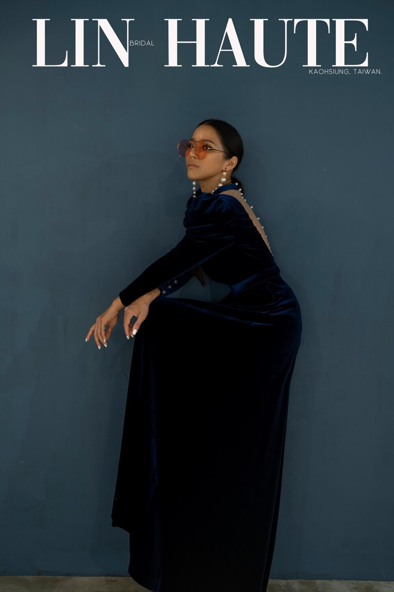

主分類一
高雄設計婚禮禮服推薦｜聚會場合不可少的晚禮服


除了夢幻白紗，時裝晚禮服正當道
晚禮服是晚上20點以後穿用的正式禮服，是女士禮服中最高檔次、最具特色、充分展示個性的禮服樣式。又稱夜禮服、晚
宴服、舞會服。常與披肩、外套、斗篷之類的衣服相配，與華美的裝飾手套等共同構成整體裝束效果。
有時候會遇上一些名場合，出席這些場合就不能只是隨意搭配就行。一件適合你的時尚又大方的禮服，能夠幫你在其他人
心中留下更加完美的印象，從而幫你獲得意想不到的驚喜。
衝突感金色
這別緻又充滿撞色設計的衝突感，有著讓人一眼難忘的法式刺繡上身跟綴滿了金色亮片的下身，充滿時尚與典雅、獨特感 睫毛蕾絲還自帶仙氣，能修飾手臂顯高顯瘦的版型，當妳緩步走來讓人心醉神迷。

奢華的絲絨質感跟高級的款式就是絕配，今年的羊蹄袖，更是不能錯過特殊的鸚藍色，讓絲絨像羽毛一樣，閃耀著不同的 光澤，讓妳每走一步都帶著動人的魅力，高級的復古感就在每個角度每個細節裡。



主分類一
高雄婚紗禮服推薦首選│禮服租借、婚紗照 拍攝、婚紗攝影師好評、婚紗展熱銷款式
高雄婚紗禮服推薦首選品牌！從專業婚顧服務、禮服租借、婚 紗照拍攝、攝影師拍攝最愛款式，想知道更多婚紗展熱銷經...

主分類一
手工禮服是什麼？跟常見的婚紗禮服有什麼 不同嗎？教你選擇最適合妳的禮服！
每個人對婚紗的概念不一樣，我們尊重每一個人對婚紗的追求 不同於常見的婚紗禮服，一件手工訂製獨一無二的單款禮服...

主分類一
高雄絕美時裝小禮服推薦｜教你成為全場注 目焦點
在婚禮上，我們新娘並不是一定要一直穿著婚紗，除了婚紗， 新娘們當然也少不了各種各樣的小禮服了，小禮物穿起來簡...